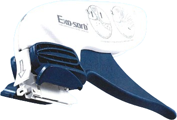
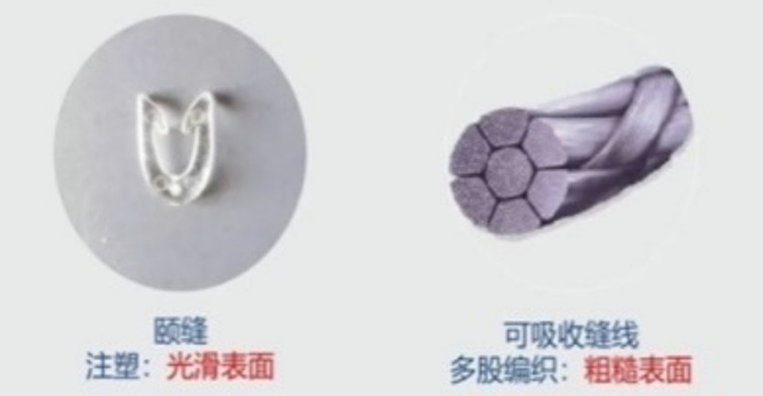
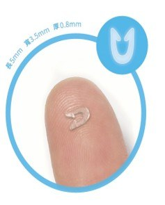

「嘉茵頤縫」
一次性可吸收釘
皮內吻合器
主辦單位
禮康生物科技有限公司
簡報 · Presenter
侯健隆 Stan
場地
敏盛醫院 開刀房
Material · 01
材質說明
聚乳酸-乙醇酸共聚物，通常稱為 PLGA，是一種生物可降解的高分子材料，由乳酸與乙醇酸兩種單體組成。具備良好的生物相容性與可控的降解速率，於醫療領域應用廣泛，如醫用縫合線。
關於 CAS 編號
在材料科學領域，CAS 通常指 CAS Registry Number。編號目的是為了方便資料庫檢索，並避免化學物質名稱多樣性所帶來的混淆。
| 項目 | Vicryl 可吸收縫線 | 一次性可吸收皮內吻合釘 |
|---|---|---|
| 材料名稱 | 聚乳酸-乙醇酸共聚物 (PLGA) | 聚乳酸-乙醇酸共聚物 (PLGA) |
| 組成 | 90% 乳酸、10% 乙醇酸 | 40% 乳酸、60% 乙醇酸 |
| 分子式 | (C₆H₈O₄)m (C₄H₄O₄)n | (C₆H₈O₄)m (C₄H₄O₄)n |
| CAS | 26780-50-7 | 26780-50-7 |
02 / 10
Advantages · 02
可吸收皮內吻合釘 vs 可吸收縫線

1 · 降低感染
可吸收縫線為多股編織，表面積大且粗糙，容易附著細菌，導致感染風險；縫線於真皮層縫合亦容易造成組織「切割」，可能導致紅斑與炎症增加。可吸收釘表面光滑，可避免上述縫線的弊端。

2 · 異物感刺激小
光滑表面設計大幅降低組織異物感，減少術後不適，提升病患恢復期間的整體舒適度。
3 · 可縫合長度
單組總長 21cm，總共 30 根皮內釘，足以應對多數臨床縫合情境。
03 / 10
01
Mechanism
操作原理
透過吻合器將可吸收釘精準植入真皮層，取代傳統縫線的貫穿式縫合，完整示範吻合器的作用機制。
示範影片 · 操作原理04 / 10
02
Standard Procedure
標準操作
依循標準作業流程逐一植入皮內釘，維持等距、對稱，確保傷口張力均勻分佈。
示範影片 · 標準操作05 / 10
03
Clinical Case
臨床實例
實際手術現場應用案例，呈現皮內吻合釘於真實傷口縫合中的操作情形與術後外觀。
示範影片 · 臨床實例06 / 10
04
Extended Wound Closure
較長傷口縫合
針對較長傷口的分段植入策略，維持縫合線張力一致，兼顧效率與美觀。
示範影片 · 較長傷口縫合07 / 10
Contraindications · 03
禁忌症
以下情況不適用：
縫合中對組織過度拉伸的情況
皮膚組織過薄或過厚
需要 X 線輻射不穿透 的情形（如可吸收釘用於定位診斷時，不適合使用）
真皮以外的其他組織
縫合不平坦區域
不能用於三級感染切口
不能在疤痕組織上使用
主要原因為疤痕組織中的膠原纖維，功能質量通常較為低劣；剔除疤痕後，可使用。
08 / 10
Summary · 04
總結
1臨床效益
- 縫合速度快、縮短手術時間
- 感染率低、顯著減少瘢痕形成
- 提升術後傷口美觀度
2病患體驗
- 無需拆線，無外露縫線
- 疼痛感降低，恢復日常活動更快
- 傷口美觀，病人滿意度提升
3醫療端優勢
- 縮短手術時間與減少併發症
- 進而降低綜合醫療成本
植入於真皮層
免拆釘
操作簡單
傷口美觀
避免針刺風險
共 30 根釘（約 21cm 傷口）
09 / 10
「嘉茵頤縫」一次性可吸收釘皮內吻合器
Thank You！
感謝敏盛醫院開刀房團隊撥冗聆聽